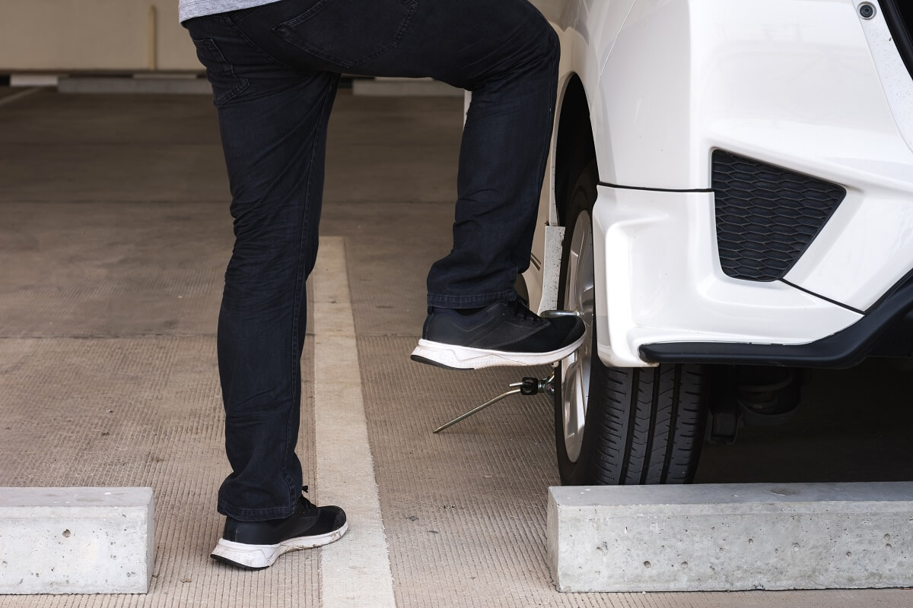
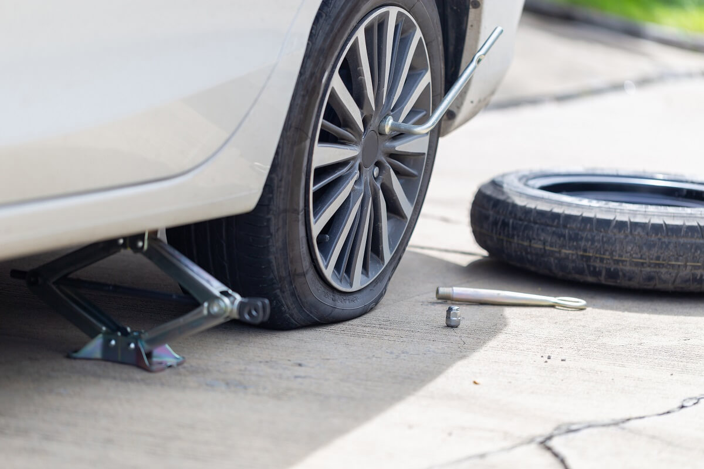
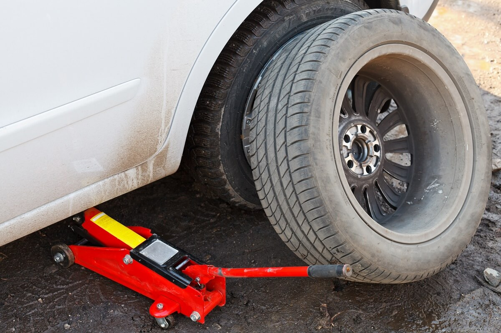

Informacja wzięta z strony Sklepopon
Najlepszym miejscem na zmianę koła jest obszar z utwardzoną nawierzchnią asfaltową lub betonową. W ostateczności ubity grunt, ale warto wówczas podłożyć pod podnośnik coś płaskiego i twardego, np. kawałek deski. W przypadku braku możliwości przeprowadzenia wymiany w miejscu innym niż pobocze jezdni należy wybrać fragment drogi oddalony od zakrętów i wzniesień. Po zatrzymaniu pojazdu w bezpiecznym miejscu należy zaciągnąć hamulec ręczny oraz wrzucić pierwszy bieg. W skrzyniach automatycznych ustawiamy lewarek w pozycji P. Przed przystąpieniem do zmiany koła należy zadbać o to, aby być widocznym dla innych. W tym celu należy uruchomić światła awaryjne oraz rozstawić trójkąt ostrzegawczy:
Zazwyczaj producenci samochodów umieszczają koło zapasowe wraz z kluczem i podnośnikiem w schowku pod podłogą bagażnika. W niektórych autach, w szczególności francuskich, lokalizacja zapasówki może być nieco inna. Zapas może być ukryty w specjalnym uchwycie, nazywanym koszem lub sankami, w podwoziu samochodu pod bagażnikiem. Aby się do niego dostać, należy odnaleźć w bagażniku specjalną śrubę i odkręcić ją za pomocą odpowiedniej końcówki klucza. Wówczas koło zostanie opuszczone na podłoże.
Po zabezpieczeniu samochodu i przygotowaniu zapasówki należy poluzować śruby w kole z przebitą oponą. Ułatwi to ich całkowite odkręcenie po uniesieniu samochodu na podnośniku. Po nałożeniu klucza na śrubę należy nacisnąć na ramię klucza na tyle, aby śruba jedynie „puściła”. W tym momencie może zrodzić się pytanie: „w którą stronę odkręcić koło”. Śruby są dokręcone na tyle mocno, że duży opór jest odczuwalny podczas próby kręcenia kluczem zarówno w prawo, jak i w lewo. Aby odkręcić śruby, należy wykonać ruch w stronę przeciwną do ruchu wskazówek zegara, czyli w lewo. Poruszenie klucza może wymagać nawet silnego naciśnięcia nogą. Poluzowanie śrub ułatwi specjalna przedłużka nakładana na ramię klucza – zwiększając długość ramienia, zwiększa się również siła przykładana do obrotu, co wynika z praw fizyki.
Gdy uda się poluzować śruby można przystąpić do uniesienia samochodu na podnośniku. Górną część podnośnika należy umieścić w przeznaczonym do tego, wzmocnionym miejscu na progu samochodu. Nowoczesne modele powinny mieć cztery takie punkty zlokalizowane w okolicy każdego z nadkoli. Podczas unoszenia samochodu należy nieustannie kontrolować stabilność pojazdu i podnośnika. Jeśli zauważymy, że podnośnik przesuwa się, konieczne jest opuszczenie auta i poprawienie podnośnika.
Gdy przebite koło znajduje się w powietrzu, można wykręcić śruby. Dzięki ich wcześniejszemu poluzowaniu nie powinno być to żadnym problemem. Pamiętaj, aby nie odkładać śrub na ziemię. Drobiny pyłu i piasku przykleją się do nich i mogą wcisnąć się w szczeliny gwintu. Po odkręceniu śrub można ściągnąć koło z przebitą oponą z piasty. Może się zdarzyć, że koło nie zechce zejść z piasty, jakby było do niej przyklejone. Jedynym rozwiązaniem jest wówczas uderzyć w nie np. kołem zapasowym. To dosyć ryzykowne – samochód może przez to zsunąć się z podnośnika. Należy przed tym jeszcze raz upewnić się, że samochód oraz podnośnik są w pełni stabilne i zachować szczególną ostrożność. Ściągnięte koło z przebitą oponą podkładamy pod wahacz zawieszenia. Będzie ono stanowić dodatkowe zabezpieczenie na wypadek wysunięcia się podnośnika – pojazd oprze się na nim, zamiast uderzyć w ziemię.
W pustym nadkolu umieszczamy zapasówkę, dopasowując otwory montażowe do otworów felgi. Następnie wkręcamy wyjęte wcześniej śruby – tym razem zgodnie z ruchem wskazówek zegara. Śruby należy dokręcać przeciwlegle. Po wkręceniu pierwszej wkręcamy śrubę w otwór naprzeciwko, nie obok. Powtarzamy tak z kolejnymi śrubami. Gdy wszystkie śruby będą trzymać koło, warto poprawić dokręcenie każdej z nich. W dalszym ciągu należy robić to przeciwlegle.
Następnie opuszczamy pojazd. Gdy zamontowane koło spocznie na podłożu, możemy jeszcze raz poprawić dokręcenie śrub – oczywiście w sposób przeciwległy. Mimo to po przejechaniu kilku kilometrów należy zatrzymać się i upewnić, że śruby mocno trzymają koło. Ważne jest również, aby zatrzymać się przy najbliższej okazji i sprawdzić wartość ciśnienia w kole zapasowym.